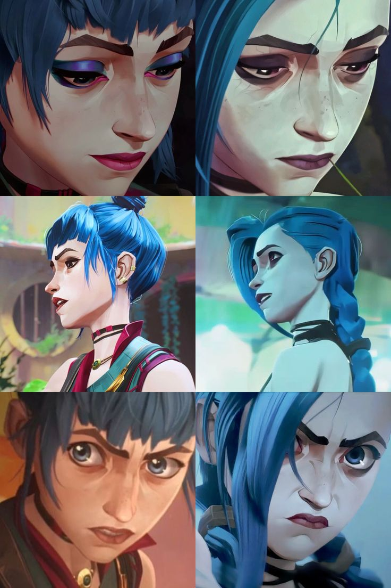
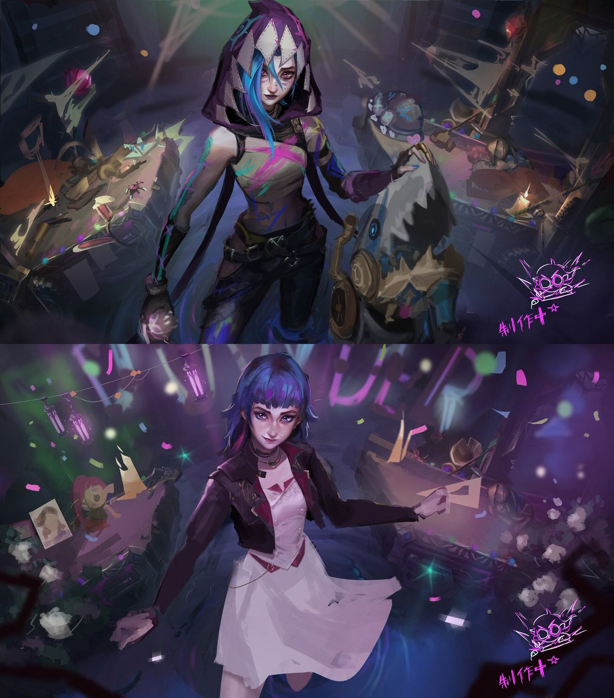

Exploring the Connection
Despite living in different realities, Powder and Jinx share the same origins, intelligence, creativity, and emotional intensity. Their differences are not necessarily who they are, but what life has made them become.
Two Paths, One Identity

Despite living in different realities, Powder and Jinx share the same origins, intelligence, creativity, and emotional intensity. Their differences are not necessarily who they are, but what life has made them become.
Both characters express themselves through engineering and invention. However, Jinx's creations often reflect chaos and destruction, while Powder uses her creativity to build, connect, and improve the world around her.
Jinx often isolates herself, struggling to understand where she belongs. AU Powder, despite experiencing loss, finds companionship and builds meaningful connections with the people around her.
Their hideouts reveal more than their technical abilities. Jinx's environment feels dangerous and chaotic, while Powder's reflects a sense of safety and belonging. The same place, shaped by two different live
